t = 0
t = 250

t = 500
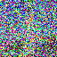
t = 750
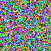
t = 999
Note, this page only contains part A. To see part b, go here .
With a seed value: 189 , here is a list of the prompts we were tasked to try:
| num_inference = 20 Results |
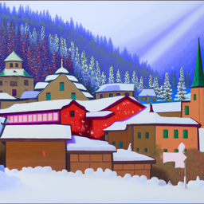 an oil painting of a snowy mountain village |
a man wearing a hat |
a rocket ship |
| num_inference = 40 Results |
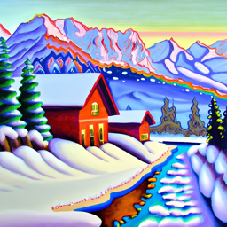 an oil painting of a snowy mountain village |
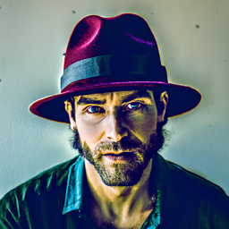 a man wearing a hat |
a rocket ship |
For each of the three prompts (listed above), the model and upsampled output is shown in the table, alongside the num_inference values. One thing that pops out immedietly about the model selected in question is that there is clear diversity in the training data distribution. We can see that the man is black, and is very characterized in his formal suit and shirt underneath. The model is also notably good at creating human faces without common misgivings related to humans such as - disfiguring or lack of detail in the eyes (though squinting further down, the eyes are a bit off), a clearly gray professional background, and ears that look humanlike.
In the case of the other two images, they embody a broad varienty of styles, which again reflects the data diversity DeepFloyd had access to.
We can compare these with the images generated with parameter num_inference = 40 to see more fine grained details (which would make sense with additional denoising steps). In the case of the man with the hat prompt, we see more complex backgrounds, such as a glimmer of a shadow, and better eye placement. In the other two, we see less blurred lines (see tree), and more of the stylistic theme included in the prompt such as oil painting. Notice that in part 3, the lack of a stylistic prompt enables the diffusion model to choose the style it pleases.
| Forward Pass of Diffusion Model, noise at various timesteps |
t = 0 |
t = 250 |
t = 500 |
 t = 750 |
 t = 999 |
The key things to notice here was the organization of timesteps. t = 0 contains the least noise, while t = T - 1 = 999 contains the most, and also is the last step in the forward process (the first step in the backward, or denoising process). The progression of noise is dictated an alpha_cumprods variable, listing the products of the values from the series of timesteps.
| Gaussian Denoising |
t = 0 |
t = 250 |
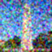 t = 500 |
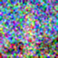 t = 750 |
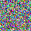 t = 999 |
Gaussian denoising isn't very effective. Look at t = 250 for an example; even when the amount of noise is comparatively minimal, the low pass filter, aka "classical denoising" isn't able to precisely erase the noise. We see this problem mounting for more noise infested images. By the time we get to t = 999, we aren't very surprised at the minimal impact of classical denoising.
|
Original Image |
||||
| Noisy Images |
t = 250 |
t = 500 |
t = 750 |
t = 999 |
| One Step Estimate |
t = 250 |
t = 500 |
t = 750 |
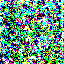 t = 999 |
The one-step method does work significantly better than classical, but needs to take baby steps. If we feed it too much noise, like in t = 999, one-step denoising will not be able to erase all of the noise injected.
|
Previous, one step denoising
t = 500 |
Previous, classical denoising
t = 500 |
| Iterative Denoising | ||||
|
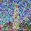 t = 690 |
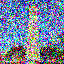 t = 540 |
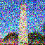 t = 390 |
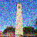 t = 240 |
t = 90 |
|
Final |
Another seperate final |
We split the denoising steps into more "strided" timesteps for efficiency, with a step size of -30. Every 5th loop, we visualize the image (which is what you are seeing, albeit moreso related to multiples of 30). For the specific run here, we set i_start = 10. We have already provided the image with information through a prior test image, so not much of a need to force the model to delve down the same rabbit hole. In comparison to the classical denoising, we see that the denoising process performs significantly better, and is able to "hallucinate" new data. In comparison to the one step estimate, the improvements are not so overt from the iterative denoising; however the additional control offered has the opportunity to provide accessibility for low compute budgets.
|
Sample 1 |
Sample 2 |
Sample 3 |
Sample 4 |
Sample 5 |
Quality isn't the best for the images. They go all over place, and aren't as remarkably well designed as an iterative denoising with classifier free guidance support.
|
Sample 1 |
Sample 2 |
Sample 3 |
Sample 4 |
Sample 5 |
We share some output, where we can control the alignment of the diffusion model by adjusting the scale value to skew the model towards or farther from the desired concept. In our case, we set CFG = 7, and generated 5 images with the conditional prompt being "a high quality photo".
| Sample test image |
Sample 1 - i_start = 1 |
Sample 2 - i_start = 3 |
Sample 3 - i_start = 5 |
Sample 4 - i_start = 7 |
Sample 5 - i_start = 10 |
Sample 6 - i_start = 20 |
Actual sample |
| Custom image 1 - Mega Charizard X |

Actual Sample |
||||||
| Custom image 2 - Appa from Avatar |
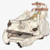 |
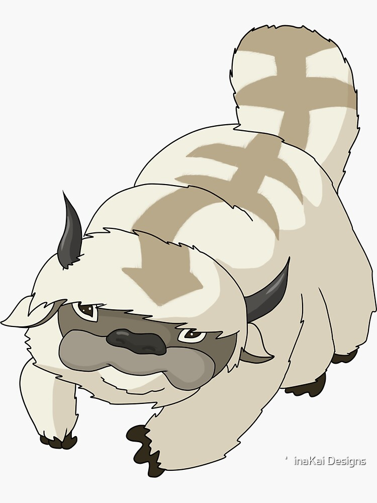 Actual Sample |
| Custom image 2 - Web Drawn Test Image |
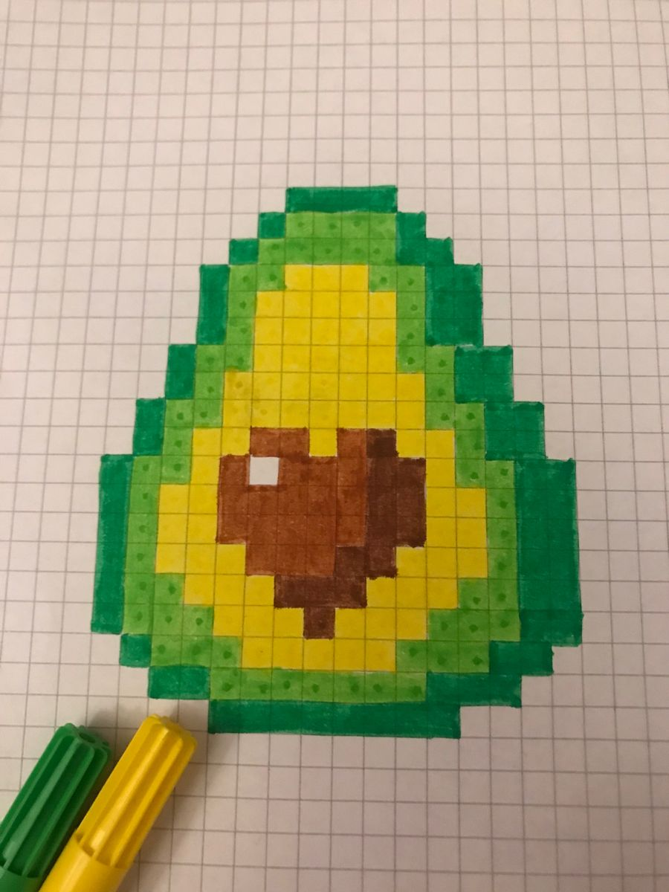 Actual Sample |
||||||
| Colab Interface Drawn Test Image |
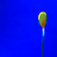 |
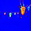 |
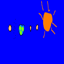 Actual Sample |
||||
| Illustrator Drawn Test Image |
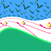 |
Actual Sample |
| Avocado |
Mask |
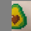 Data To replace |
Original Sample |
Replaced Sample |
| Professor Efros Headshot |
Mask |
Data To replace |
Original Sample |
Replaced Sample |
| Sample Provided Test Image |

Actual |
||||||
| Illustrator Image |
Actual |
||||||
| Hand Drawn Image |
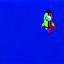 |
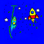 |
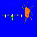 |
Actual |
| Sample Requested |
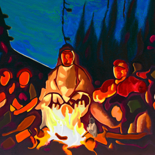 an oil painting of people around a campfire |
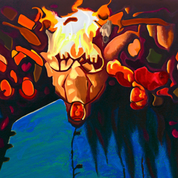 an oil painting of an old man |
| Custom Anagram 1 |
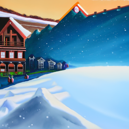 an oil painting of a snowy mountain village |
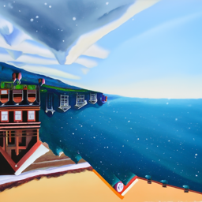 an oil painting of the amalfi "cost" |
| Custom Anagram 2 |
an oil painting of a snowy mountain village |
an oil painting of the amalfi "cost" |
| Custom Anagram 3 |
a pencil |
a rockete ship |
|
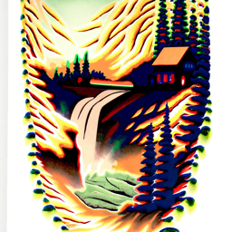 waterfall close up, skull far away |
a photograph of a dog, a lithograph of a waterfall To see the dog, check this low frequency image 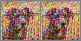 |
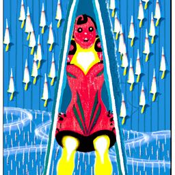 a rocket, a lithograph of a waterfall To see the rocket, check this low frequency image 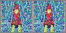 |